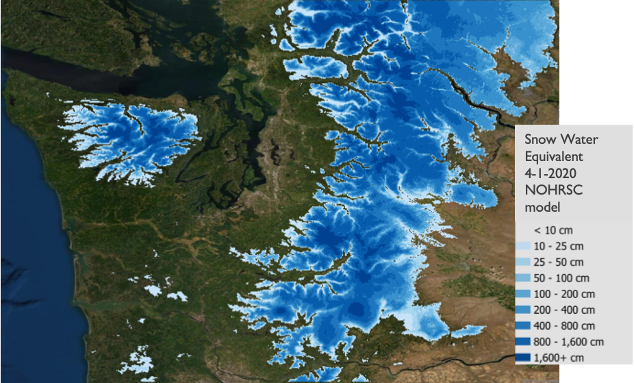
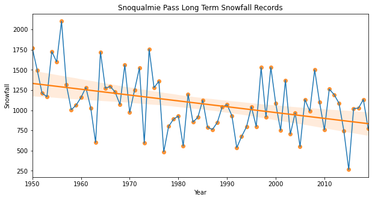

Cascades Mountain Snowpack
Hidden Lakes Fire Lookout plastered with snow
Introduction
Data Sources
Snow Telemetry Sites (SNOTEL)
Washington State Snow Telemetry (SNOTEL) sites with elevation.
The Natural Resources Conservation Service (NRCS) maintains the Snowpack Telemetry (SNOTEL) network. These stations provide weather and snow data updated hourly stretching back decades. Different stations record different information, but almost all sites measure snow water equivilent (SWE), snow depth, precipitation, and temperature. There are 82 sites in Washington state. Data can be accessed with various methods: SNOTEL data and products link.
National Operational Hydrologic Remote Sensing Center Data (NOHRSC)

Current Snow Depth Visualization (US Forest Service
Link to FS map.
This map displays current snow depth according to the National Oceanic and Atmospheric Administration (NOAA) National Snow Analyses (NSA), which is a product of the NOHRSC. It is hosted by the USFS Pacific Southwest branch and defaults to the Sierra mountains of California, however the map shows the entire Western United States including Washington state. It is an effective visualization of the NOHRSC data described above.
Methods
CEE 498 Geospatial Data Analysis, Final Project:
https://github.com/UW-GDA/Cascades-Snowpack-Kakatsakis
Figures

new normals link: NOAA Climate Normals